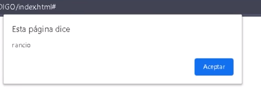
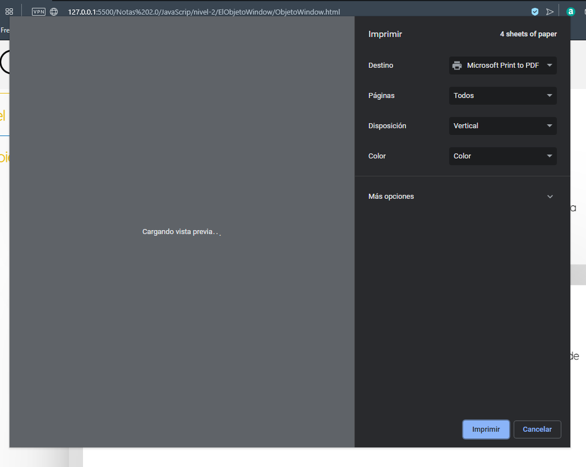
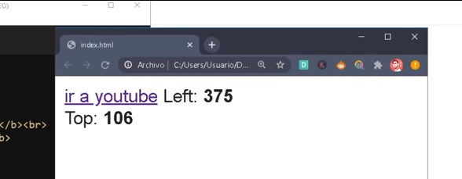

El Objeto Window
Se trata del elemento HTML con mayor gerarquia dentro de la paguina web, ya que este se refiere a la ventana del navegador en si, por lo tanto todos los demás elementos HTML dependen de este, incluyendo al mismisimo DOM, en otras palabras permite manipular el comportamiento de toda la ventana del navegador desde JavaScrip, así como obtener datos de esta, por lo tanto la cantidad de usos que se le puede dar al objeto Window es inmensa.
Debido a esto en este apartado unicamnete se abordara los temas de mayor importancia así como los de mayor utilidad a la hora de programar con JavaScrip.
Nota: El objeto Window ereda las propiedades de EventTarget.
Metodos y Propiedades
Open( )
-
Este metodo permite abrir una nueva pestaña, para lo cual es necesario indicar la dirección de la nueva venta, la cual debe ser ingresada como dato dentro del metodo, como se puede apreciar en el ejemplo:
Ejemplo
Close( )
-
Este metodo permite cerrar una venta que haya sido abierta con el metodo "open( ), tal como se puede apreciar en el siguiente ejemplo:
Ejemplo
Closed
-
Esta propiedad tiene la función de comprobar si la pestaña referenciada se encuentra abierta o cerrada, para lo cual retorna un valor booleano, el cual sera "true" si la pestaña esta cerrada y "false" si la pestaña se encuetra abierta
Ejemplo
Stop( )
-
Este metodo permite detener la carga de la venta referenciada así esta no se haya concluido, en otras palabras permite interrumpir la carga de la pagina que se encuentre en la nueva ventan en el mometo que se desee.
Ejemplo
Nota: En este ejemplo se aprecia el metodo siendo utilizado en la consola del navegador para interrumpir la carga de "youtube" antes que esta se complete.
Alert()
-
Este metodo muestra un cuadro de alerta con el contenido espesificado dentro, y un boton de aceptar:
Ejemplo
Resultado

Print( )
-
Este Metodo abre un menu de configuración de inpresión con el fin de imprimir la paguina actual, por lo tanto este metodo literalmente permite gestionar una inpresión real de la paguina.
Ejemplo
Resultado

Promp()
-
Este metodo retorna un string ingresado por el usuario, para lo cual este metodo dispara una alerta que contendra un mensaje previamete definido por el programador y un cuadro de texto, el caul se utilizara para lamacenar la respuesta del usuario.
Ejemplo
Resultado
Nota: Independientemente de lo que se ingrese, en este metodo siempre retornara un dato de tipo string.
Confirm( )
-
Este metodo tiene la función de comprobar que el usuario desea realizar una acción en espesifico, para lo cual se dispara una alerta que incluye un mensaje definido, así como botones para cancelar y conformar, en base a la opción seleccionada por el usuario el metodo retornara un valor boolean ya sea "true" o "false".
Ejemplo
Resultado
Consola
Nota: Actualmete su uso a disminuido ya que existen otras opcipnes a la hora de corroborar las inteciones del usuario, sin embargo se sigue usando para aquellas ocaiones en las que es probable que el usuario alla iniciado una acción por error, por ejemplo el salir accidentalmete de la paguina web.
Screen
-
Esta propiedad se trata de uno de los objetos que posee el objeto window, para trabajar con la pantalla del dispositivo, por lo tanto se puede acceder a las propiedades del Screen
Algunas de estas propiedades son:
Screen.availHeight: Se trata de la altura que puede tener la window del browser si esta maximizada.
Screen.availWidth: Se trata del ancho que puede tener la window del browser si esta maximizada.
Screen.height: Basicamete se trata del alto total de la pantalla
Screen.width: Basicamete se trata del ancho total de la pantalla
ScreenLeft y ScreenTop
-
Estas propiedades permiten conocer la posición en la que se encuentra el navegador dentro de la pantalla del dispositivo, para hacerlo estas propiedades devuelven la distancia entre los bordes del navegador y los bordes de la pantalla.
-
ScreenLeft: retorna la distancia entre el borde izquierdo del navegador y el bode izquierdo de la pantalla, (posición en el eje X)
-
ScreenTop:
retorna la distancia entre el borde superior del navegador y el bode superior de la pantalla, (posición en el eje Y)
Ejemplo
Resultado

En este ejemplo se puede apreciar el como se imprime en pantalla el valor retornado por estas propiedades, el cual corresponde a la posición ocupada actualmete por el navegador dentro de la pantalla del dispositivo, es decir la distancia entre los bordes de la pantalla y los bordes del navegador.
Nota: Estas propiedades se tratan de solo lectura, no de escritura, por lo tanto no pueden ser modificadas.
ScrollX y ScrollY
-
Estas propiedades permiten conocer el que tanto se a despazado el docuemto vertical y orizontalmente, es decir estas propiedades retornan lacantidad de pixeles que se a despazado el usario hasta ese momento por la pagina tanto en el ejeX como en el ejeY, en otras palabras se podira decir que estas permiten conocer la posicioón del usuario dentro del documento.
Ejemplo
Resultado
En este ejemplo se puede apreciar el como se dispara una lerta con el valor de las propiedades, el cual corresponde a la posición en la que se encuentra el usuario en el docuemto actual (El "ScrollX" vale 0 ya que orizontalmente no se a generado despalazamiento, solo se a producido despalazamiento vertical.)
Scroll y ScrollTo
-
Estas propiedades son casi exactamente iguales, ambas permiten desplazar al usario hasta una posición predenterminada del documento, es decir esta propiedad genera un desplazamiento hasta un lugar predefinido del docuemto.
En este ejemplo se puede apreciar el como se usa la propiedad "Scroll" en la consola del navegador para desplazarse por una pagina.
ResizeBy y ResizeTo
-
Estas propiedades son muy parecidas entre si, con la unica diferencia de que una es relativa mientras que la otra es absuluta, el efecto de ambas es la de modificar el tamaño de una ventana emergente (propiedad open( )).
ResizeBy
ResizeTo
Nota: existen siertas condiciones y regulaciones para el uso de estas propiedades, especialmente cuando se trabaja con paginas de terceros, sin embargo no se profundiza en estos debido al poco uso se les da a estas propiedades.
MoveBy y MoveTo
-
Estas propiedades son muy parecidas entre si, con la unica diferencia de que una es relativa mientras que la otra es absuluta, el efecto de ambas es la de mover la ventana emergente (propiedad open( )) a una posición pre-definida.
ResizeBy
ResizeTo
Nota: existen siertas condiciones y regulaciones para el uso de estas propiedades, especialmente cuando se trabaja con paginas de terceros, sin embargo no se profundiza en estos debido al poco uso se les da a estas propiedades.
Location
El objeto Location pertence al igual que otros tantos al objeto window, este objeto se enfoca en los aspectos realiconados con los dominios y direcciones web del docuemto, por lo tanto posee varios metodos con el fin de obtener todos estos datos.
A su vez la siguite imagen referencia de forma simple la estructura de la URL de una paguina web.
Nota: HostName y dominio web son dos cosas diferentes, ya que un HostName podria llegar a ser una IP o cualqier codigo funcional, mientras que un domio se trata de traducir direcciones IP a terminos memorisables para las personas.
Href
-
Esta porpiedad retorna la ubicación completa del archivo, es decir esta propiedad retorna la ruta completa del archivo que se esta ejecutando.
Ejemplo
HostName
Esta propiedad retorna el nombre del dominio del servidor web en el que se encuentra alojado el archivo.
Ejemplo
pathName
-
Este metodo retorna la ruta al archivo desde el dominio de origen, es decir retorna en que parte del dominio se encuentra el archivo actual.
Ejemplo
Protocol
-
Este metodo retorna el protocolo con el que trabaja el servidor web.
Ejemplo
Assing()
Este Metodo permite cargar un nuevo documento, el cual debe ser definido dentro de los parentesis de este metodo.
Ejemplo